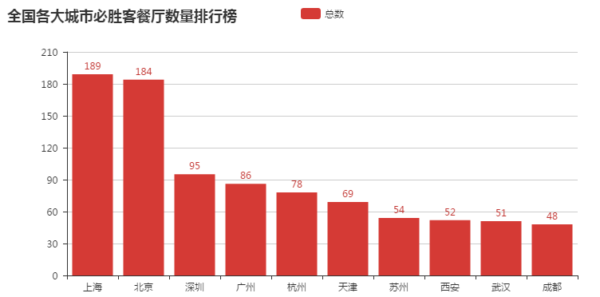
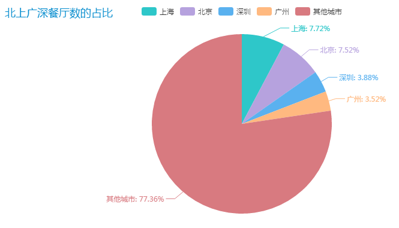

在之前的一篇文章中，我讲到如何爬取必胜客官网中全国各大城市餐厅的信息。虽然餐厅数据信息被抓取下来，但是数据一直在硬盘中“躺尸”。不曾记得，自己已经第 n 次这么做了。说到这里，要追溯到自己的大学时光。
自己从大学开始就接触 Python，当时是自己的好奇心很强烈。好奇为什么 Python 不需要浏览器就能抓取网站数据。内心感叹到，这简直是太妙了。自己为了体验这种抓取数据的乐趣，所以写了很多的爬虫程序。
随着自己知识面地拓展，自己了解到数据分析这领域。自己从而才知道爬取到的数据，原来背后还隐藏的一些信息。自己也是在学习这方面的相关知识。这篇文章算是数据分析的处女稿，主要内容是从数据中提取出必胜客餐厅的一些信息。
1.环境搭建
百度前端技术部开源一个基于 Javascript 的数据可视化图表库。其名字为 ECharts。它算是前端数据可视化的利器，能提供直观，生动，可交互，可个性化定制的数据可视化图表。
国内有个大神突发奇想，这么好用的库如果能和 Python 结合起来就好了。于是乎，pyecharts 库就应运而生。因此，pyecharts 的作用是用于生成 Echarts 图表的类库。本文中的所有图标，自己都是利用 pyecharts 生成的。
安装该库也很简单，使用 pip 方式安装。
1 | pip install pyecharts |
2.数据清洗
数据清洗工作是数据分析必不可少的步骤。这一步是为了清洗一些脏数据。因为可能网站本身就有空数据，或者匹配抓取网站信息时，有些混乱的数据。这些都需要清除掉。
我之前是将数据写到一个 json 文件中，我先将数据读取出来。然后把 json 文本数据转化为字典类型。
1 | def get_datas(): |
接着对字典进行遍历, 统计每个城市的餐厅总数。
1 | def count_restaurants_sum(data): |
再将字典中的每个 key-value 转化为元组，然后根据 value 进行倒序排序。
1 | restaurants_sum = sorted(restaurants_sum.items(), key=lambda item: item[1], reverse=True) |
最后根据显示结果，手动删除一些脏数据。
1 | def clean_datas(data): |
到此，数据工作已经完成。
3.数据分析
我们已经拿到了经过清洗的数据，我们简单对数据进行打印，然后绘制直方图。
1 | def render_top10(): |
绘制出来的结果如下：

不难看出，一线城市拥有必胜客的餐厅数比较多，省会城市拥有餐厅数要比非省会城市要多。
我们继续绘制饼状图，看看北上广深的餐厅数在全国的占比。
1 | def render_top10_percent(): |
绘制出来的结果如下：

从数据上看，北上广深的餐厅数占据全国餐厅数的 22.64%。其他二三线城市共占据 77.36%。
说明必胜客餐厅不仅主打大城市路线，还往二三四线城市发展，扩展领域。
4.源码
如果你想获取项目的源码, 点击按钮进行下载。